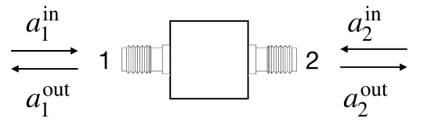
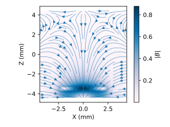

Section 1 Résonateur diélectrique en KTO
Dans cette première partie, l’objectif est de caractériser le résonateur diélectrique qui sera utilisé dans la troisième partie pour observer la résonance de spin. Pour observer la résonance qui se situe dans le domaine micro-ondes (entre 7 et 8 GHz), on utilise un analyseur de réseau vectoriel, en anglais Vector Network Analyzer (VNA).
Sous-section 1.1 Analyseur de réseau (VNA)
Un analyseur de réseau vectoriel permet de mesurer les paramètres de scattering \(S_{ij}\) d’un dispositif micro-ondes à un ou deux ports.

La matrice de scattering \(S_{ij}\) relie les amplitudes diffusées aux amplitudes incidentes
\begin{align*}
\begin{pmatrix} a_{1}^\text{out} \\ a_{2}^\text{out} \end{pmatrix} = \begin{pmatrix} S_{11} \amp S_{12} \\ S_{21} \amp S_{22} \end{pmatrix} \begin{pmatrix} a_{1}^\text{in} \\ a_{2}^\text{in} \end{pmatrix}
\end{align*}
L’analyseur peut mesurer à la fois les coefficients de réflexion \(S_{ii}\) et de transmission \(S_{i \neq j}\text{.}\) En général \(S_{12}=S_{21}\text{,}\) mais ce n’est pas forcément le cas. Pour mesurer, par exemple \(S_{12}\text{,}\) l’appareil émet un signal par le port 2 et mesure le signal sur le port 1. Le VNA mesure le module et la phase de chaque paramètre \(S_{ij}\) en fonction de la fréquence.
Les paramètres les plus importants à régler pour la mesure sont:
-
le "span", c’est à dire l’étendue du domaine de fréquence \(\Delta f\) qui est balayé pendant un sweep
-
le nombre de points \(N\) dans le sweep en fréquence qui fixe l’écart \(\delta f = \Delta f/N\) entre deux points de mesure
-
la largeur de bande (Resolution Bandwidth, "RBW") qui fixe le temps d’intégration (\(1/\text{RBW}\)) pour chaque point de mesure
-
la puissance émise par le VNA pour effectuer la mesure ("Power")
Sous-section 1.2 Calibration du VNA
Avant d’utiliser le VNA pour caractériser un élément, il faut effectuer une calibration afin de s’affranchir de la propagation dans les câbles entre le VNA et le dispositif à caractériser. Pour effectuer cette calibration, on applique des standards (open, short, match) sur chaque port, puis on mesure la transmission entre les deux ports (through).
-
Branchez deux câbles SMA sur les deux ports du VNA et connectez les deux câbles avec un I. Appuyez sur "Preset" pour appliquer les paramètres de mesure par défaut.
-
Explorez les menus "Measurement" et "Format" pour mesurer et afficher le module et la phase ou la partie réelle et imaginaire de différents paramètres de scattering.
-
Observez le signal mesuré en transmission \(S_{12}\) et en réflexion (\(S_{11}\) ou \(S_{22}\)). Comparez au signal attendu pour un montage idéal.
-
Enlevez le I, et effectuez la calibration "TOSM" en appuyant sur la touche "CAL". Suivez les instructions et branchez chaque élément du kit de calibration sur chaque câble avant de lancer la mesure.
-
Enlevez le dispositif de calibration et observez à nouveau les coefficients de réflexion en phase et module. Qu’observez-vous ?
-
Connectez à nouveau les deux câbles avec un I et observez la transmission en phase et module. Qu’observez-vous ?
-
Remplacez le I par le guide microstrip sur le porte-échantillon. Comment évolue la phase avec la fréquence ? En déduire la vitesse de propagation dans le guide du porte-échantillon. On pourra acquérir une trace et en faire l’analyse dans un notebook Jupyter.
-
Utilisez la fonction "Auto length" dans le menu "Offset" pour compenser la propagation dans le guide. Le dispositif est maintenant calibré.
Sous-section 1.3 Caractérisation du résonateur en KTO
On utilise un résonateur parallélépipédique en KTO de dimensions 5x5x0.5 mm. Le KTO est un matériau paraélectrique proche de la transition ferroélectrique. Il est donc très facilement polarisable et sa constante diélectrique est très élevée, environ 300 à température ambiante et 4000 à basse température. Comme l’épaisseur du résonateur est bien plus petite que ses dimensions transverses, on peut considérer le KTO comme un guide planaire. Les modes propres sont alors les ondes stationnaires d’un résonateur carré. Le mode fondamental est le mode TE01 dont le champ magnétique ressemble à celui d’un dipôle magnétique. La figure ci-dessous montre l’intensité et les lignes de champ magnétique:

L’intérêt principal de ce résonateur de grande constante diélectrique est d’obtenir un champ magnétique micro-ondes intense à la surface du résonateur. Pour exciter les modes de résonance, il suffit de placer le KTO près du guide d’onde sur le porte-échantillon.
-
Placez le résonateur près du guide et observez la transmission au VNA entre 7 et 8 GHz.
-
Comment varie la résonance avec la distance au guide ?
Pour comprendre l’évolution de la résonance, on introduit le taux de perte par couplage \(\kappa_c\) et le taux de perte intrinsèque \(\kappa_i\text{.}\) Les pertes totales sont \(\kappa=\kappa_c+\kappa_i\text{,}\) l’énergie stockée dans le résonateur décroît comme \(\exp (-\kappa t)\) avec le temps. On distingue deux régimes limites: le régime sur-couplé \(\kappa_c \gg \kappa_i\) et le régime sous-couplé \(\kappa_c \ll \kappa_i\text{.}\)
-
Sans faire de calcul, essayez de tracer \(S_{12}\text{,}\) \(S_{13}\) et \(S_{33}\) dans chaque régime. Les numéros des ports sont définis sur le schéma ci-dessous:

-
Effectuez les mesures au VNA pour vérifier vos prédictions. Enregistrez quelques traces au format HDF5 qui vous serviront à illustrer votre rapport et essayez d’estimer \(\kappa_i\) pour le résonateur.
Pour mesurer la résonance de spin, on cherche à mesurer le plus précisément possible la fréquence de résonance du résonateur.
-
Dans quel régime de couplage faut-il se placer ?
-
Trouvez une configuration où ce régime est à peu près atteint pour la mesure \(S_{12}\text{.}\)